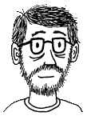

About Team DVzine | Donation Info | Site Map
About Team DVzine | Donation Info | Site Map
About Team DVzine
Alec, GCB and Frunch all attended Oberlin College in Ohio. In 1997 Frunch stumbled across The Dvorak Simplified Keyboard Layout on the internet. Frunch told GCB about his discovery and the pair immediately set out to learn it. The following year Alec was quickly convinced that Dvorak was the only way to type.
As time passed, our now inseparable trio did their best to promote Dvorak's efficiency, health benefits, and simple beauty to friends, colleagues, and acquaintances. They used napkin-scrawled diagrams, enthusiastic rhetoric and dramatic gesticulations, but to little effect. At the time, they felt they lacked the proper tools to communicate the simple elegance of Dvorak to the world.
Then, in 2005 a friend suggested to Alec that he create a small zine about "something he really cared about." Alec immediately knew what he would do: "Of course! We'll use the power of COMICS to promote DVORAK!" Alec recruited Frunch and GCB and the trio began to develop, research and revise a script for the zine. Alec spent the spring of 2005 drawing and inking the zine while Frunch and GCB started working on this companion website.
Upon its launch, DVzine.org was immediately featured on Slashdot.org, and garnered over 30,000 hits in just a few hours, until our server crashed. In 2007 we were also featured on BoingBoing.net which caused a similar influx of interest.
In 2011 Alec, Frunch, and GCB changed the copyright of the Dvorak Zine to a Creative Commons Attribution-NonCommercial-ShareAlike 3.0 Unported License to help spread the message of The Dvorak Zine to as many typists as humanly possible! At the same time, they also launched a new DVzine Blog to answer questions about Dvorak and so they can continue to post new content which can be more easily shared around the internet.
ALEC
Alec Longstreth was born and raised in Seattle, WA. He has been self-publishing his Ignatz Award winning minicomic Phase 7 since 2002. After graduating with highest honors from Pratt Institute's illustration program in 2007, he moved up to White River Junction, Vermont where he currently teaches comics at The Center for Cartoon Studies and works as a freelance illustrator
FRUNCH
Frunch (AKA "Michael Cardiff") grew up in Towson, MD. At Oberlin, he received High Honors in Mathematics for his project on mathematically optimizing keyboards. He completed his PhD (2010) in Civil and Environmental Engineering at Stanford University with an emphasis in Hydrology, an is now an Assistant Research Professor at Boise State University. In August 2012, he will be starting a tenure-track position as an Assistant Professor of Geosciences at the University of Wisconsin-Madison.
GCB
GCB (AKA Gabe Carleton-Barnes) was born and raised in Portland, OR. After Oberlin, he worked primarily in non-profit technology and traveled the world, including a 3-year trip to New York City, where he worked as a Mac Genius in the 5th Avenue Apple Store. He recently returned to Portland where he is the Tech Guy for the International Living Future Institute, a database consultant, and sometimes a profession Magic player.